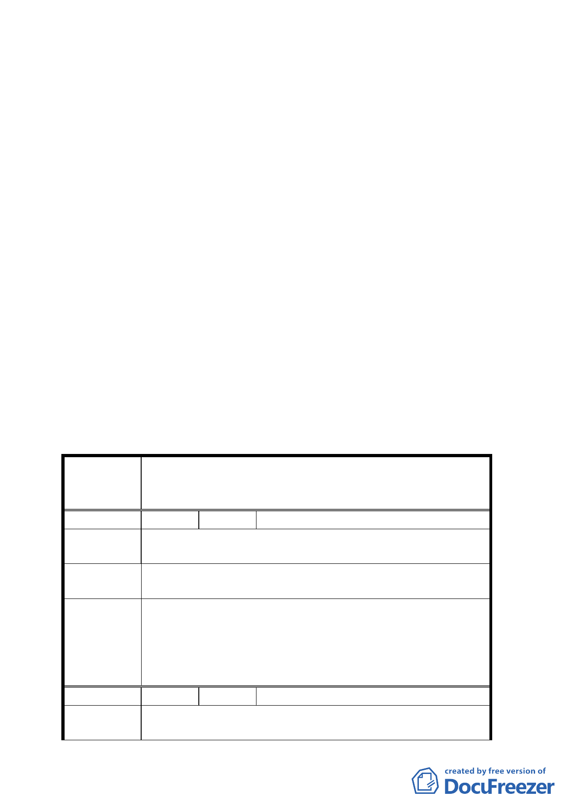

四、計畫範圍：詳計畫圖所示。
五、變更理由及內容：詳計畫說明書所示。
六、公民或團體所提意見：四件。（詳綜理表）
七、經提九十三年六月二十四日本會第五三○次委員會議決議：
本案請發展局於兩星期內邀集相關單位召開協商會議，澄
清相關權益後，再提會討論。
八、嗣都市發展局於九十四年二月十六日函送辦理情形一覽表
到會，謹提請討論。
決議:
一、本案照案通過。
二、公民或團體所提意見審決如后附綜理表。
附帶決議：請台電再積極與國泰建設股份有限公司協商合理補
償問題，並請發展局協助國泰公司土地建築線之指
定。
臺北市都市計畫委員會公民或團體所提意見綜理表
變更臺北市文山區公訓段二小段二一三地號等部分第二種
案 名 及第三種住宅區土地為電力設施用地（供地下電纜使用）
計畫案
編 號 １ 陳情人 李華剛
陳情理由
深美-台北 161 仟伏地下電纜請包含萬芳高中後門那根高
壓塔地下化。
建議辦法
請地下化，才能免於輻射，維護 66 巷 61、63、65、67、
69、71 號…居民之人身安全。
1. 依台電說明，目前線路地下化係以地區發展情形分期分
區進行；另因架空線下地，需設置連接站轉換，故若下
委員會決議 地包含萬芳高中後門之連接站，則必須另覓地點設置而
目前附近並無適宜地點。
2. 所提意見轉請台電公司參考。
編 號 ２ 陳情人 石璞
陳情理由
1.
興德路 66 巷 61、63、65、67、69、71 號後面高壓電塔
應遷回原處。
三